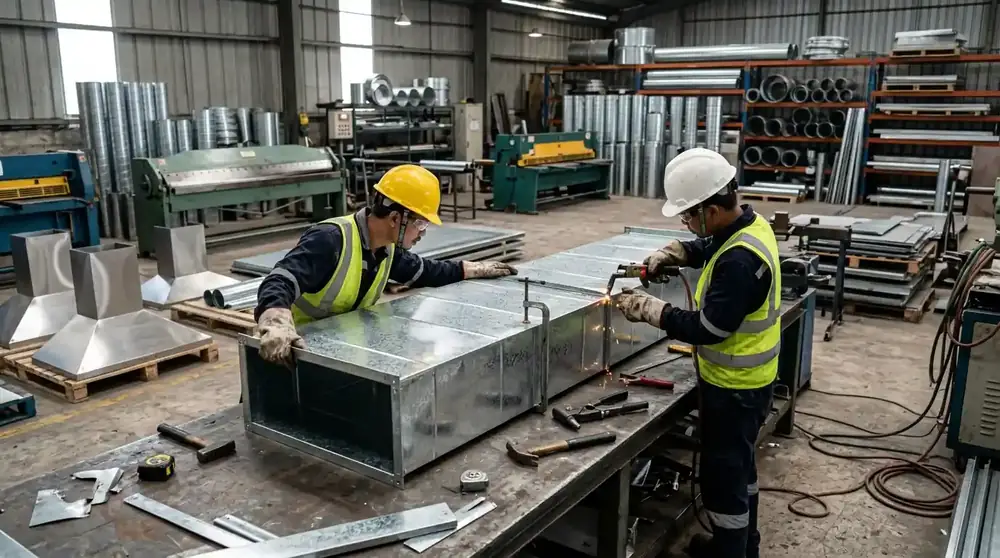

Kenapa Ducting Dihitung per Meter Persegi?
Ducting berbentuk saluran tertutup dengan empat sisi (persegi atau persegi panjang), dan porsi biaya terbesarnya terletak pada pemakaian bahan plat serta ongkos fabrikasi pembentukannya. Karena itu, cara paling adil dan standar industri dalam menghitungnya adalah memakai luas permukaan seluruh sisi saluran (m²).
Standar satuan m² ini juga mempermudah project manager, quantity surveyor (QS), maupun tim purchasing untuk membandingkan penawaran dari berbagai vendor secara objektif (*apple-to-apple*), sebab semuanya mengacu pada basis luasan material yang sama persis.
Rumus Dasar Perhitungan Luas Ducting:
Luas Permukaan (m²) = Keliling Penampang Saluran (m) × Panjang Saluran (m)
Contoh Kasus: Saluran ducting berdimensi 40 cm × 30 cm sepanjang 10 meter.
• Keliling Penampang = 2 × (0,4 m + 0,3 m) = 1,4 meter.
• Total Luas Saluran = 1,4 m × 10 m = 14 m².
Catatan Teknis: Komponen fitting khusus seperti elbow (siku), reducer (pengecil ukuran), dan branching (percabangan) lazimnya dihitung tersendiri atau dikalikan faktor koefisien pengerjaan tambahan karena tingkat kerumitan fabrikasinya yang lebih tinggi.

Faktor yang Membuat Harga Berbeda-beda
Jika Anda menerima dua penawaran harga ducting yang terlihat terpaut jauh, hampir pasti ada perbedaan mendasar pada lima faktor penentu berikut:
- Jenis Material: Ducting BJLS (Baja Lapis Seng) dan ducting PU (Polyurethane pre-insulated) memiliki harga dasar bahan baku yang tidak sama di pasar komoditas.
- Ketebalan Plat (Gauge): Untuk BJLS, ketebalan bervariasi (mulai dari BJLS 50 dengan tebal 0,5 mm hingga BJLS 80 tebal 0,8 mm atau lebih). Plat yang lebih tebal membutuhkan tonase material lebih besar dan lebih mahal, namun menghasilkan saluran yang kokoh dan tidak bergetar (*flapping*), terutama pada bentang sisi ducting yang lebar.
- Spesifikasi Isolasi: Pemilihan bahan peredam suhu seperti glasswool berkepadatan 16 kg/m³ atau 24 kg/m³, rockwool tahan api, maupun armaflex closed-cell memiliki harga yang berbeda signifikan. Pada BJLS, pekerjaan insulasi ini dipasang dan dihitung terpisah.
- Tingkat Kesulitan Pemasangan di Lapangan: Gedung dengan plafon tinggi di atas 5 meter membutuhkan perancah (scaffolding) atau scissor lift, area lorong sempit yang padat jalur pipa lain, atau instalasi di malam hari (mall) membutuhkan waktu dan alokasi man-hour teknisi lebih banyak.
- Volume Total Pekerjaan: Skala proyek yang besar (di atas 500 m² atau ribuan meter persegi) umumnya memberikan ruang efisiensi ongkos fabrikasi dan transportasi per m² dibanding proyek renovasi kecil berukuran puluhan meter.
Membandingkan Struktur Biaya BJLS dan PU
Menyebut salah satu material secara mutlak "lebih murah" sering kali menyesatkan bagi pihak purchasing, karena komponen pembentuk biayanya berbeda secara fundamental.
Pada Ducting BJLS, biaya terdistribusi ke beberapa pos: pembelian lembaran plat BJLS, ongkos fabrikasi pemotongan/penekukan di workshop, upah gantung saluran di lokasi, dan ongkos pengadaan serta pembungkusan insulasi glasswool/aluminium foil sebagai tahapan tersendiri.
Pada Ducting PU, insulasi busa rigid poliuretan sudah menyatu di dalam panel sandwich. Dengan demikian, tahap isolasi terpisah tidak lagi diperlukan dan waktu pemasangan di lokasi jauh lebih singkat. Namun, harga per lembar panel PU dasarnya biasanya lebih tinggi daripada plat BJLS polos.
| Komponen | Ducting BJLS | Ducting PU |
|---|---|---|
| Material Dasar | Plat baja berlapis seng (galvanized sheet) | Panel sandwich polyurethane pre-insulated |
| Tahap Isolasi | Dikerjakan terpisah (glasswool + aluminium foil) | Sudah terintegrasi menyatu di dalam inti panel |
| Kecepatan Pasang | Lebih lama karena ada tahapan pembungkusan isolasi | Umumnya jauh lebih cepat dan minim debu serat |
| Bobot Saluran | Relatif lebih berat, butuh rangka gantungan kuat | Sangat ringan, beban struktural plafon minimal |
| Aplikasi Terbaik | Exhaust dapur, cerobong asap, pabrik, area semi-outdoor | AC Central kantor, ballroom, cleanroom, gedung hemat energi |
Harga material komoditas bergerak dinamis mengikuti kurs dan harga pasar logam/kimia poliuretan. Oleh karena itu, kami tidak memajang tabel angka nominal statis di artikel ini agar tidak menyesatkan perencanaan anggaran Anda. Angka penawaran yang dapat dipertanggungjawabkan secara profesional selalu berangkat dari spesifikasi teknis dan gambar kerja proyek Anda.
Hal yang Sebaiknya Diperjelas dalam Penawaran
Saat Anda membandingkan surat penawaran harga (SPH) atau draft RAB dari kontraktor ducting, pastikan beberapa butir teknis berikut tertulis secara eksplisit:
- Cakupan Isolasi: Apakah harga per m² yang tertera sudah termasuk pengadaan dan pemasangan isolasi termal, ataukah isolasi masih dihitung sebagai item penagihan terpisah?
- Aksesoris Air Distribution: Apakah fitting, volume control damper (VCD), fire damper, plenum box, serta supply/return air grille sudah termasuk atau dihitung unit *lump sum*?
- Mobilisasi & Transportasi: Apakah ongkos pengiriman material dari workshop ke lokasi proyek serta mobilisasi alat bantu (scaffolding/crane) sudah tercakup?
- Ketentuan Pekerjaan Tambah-Kurang (Addendum): Seperti apa rumus perhitungan opname volume luasan riil jika terjadi perubahan jalur ducting di tengah pelaksanaan proyek?
Penawaran yang sekilas tampak murah di atas kertas bisa berujung jauh lebih mahal jika banyak item krusial yang ternyata belum dimasukkan ke dalam lingkup dasar.
Cara Mendapatkan Estimasi yang Akurat
Mendapatkan penawaran harga yang akurat dan kompetitif bersama tim engineering kami sangat praktis:
- Kirimkan Denah atau Shop Drawing: Dokumen dalam format CAD (DWG) atau PDF arsitektur/MEP yang memuat denah ruangan dan jalur saluran.
- Tentukan Preferensi Material: Sebutkan apakah Anda menginginkan plat BJLS (beserta tebal dan tipe isolasi) atau panel PU, atau mintalah rekomendasi terbaik dari tim kami sesuai anggaran.
- Informasikan Lokasi & Kondisi Proyek: Lokasi kota proyek, ketinggian plafon, serta jadwal jam kerja yang diperbolehkan di gedung.
Dari data tersebut, tim estimator kami akan menyusun rincian penawaran harga (RAB) yang terstruktur, lengkap dengan lingkup kerja, spesifikasi bahan, dan jadwal pelaksanaan.